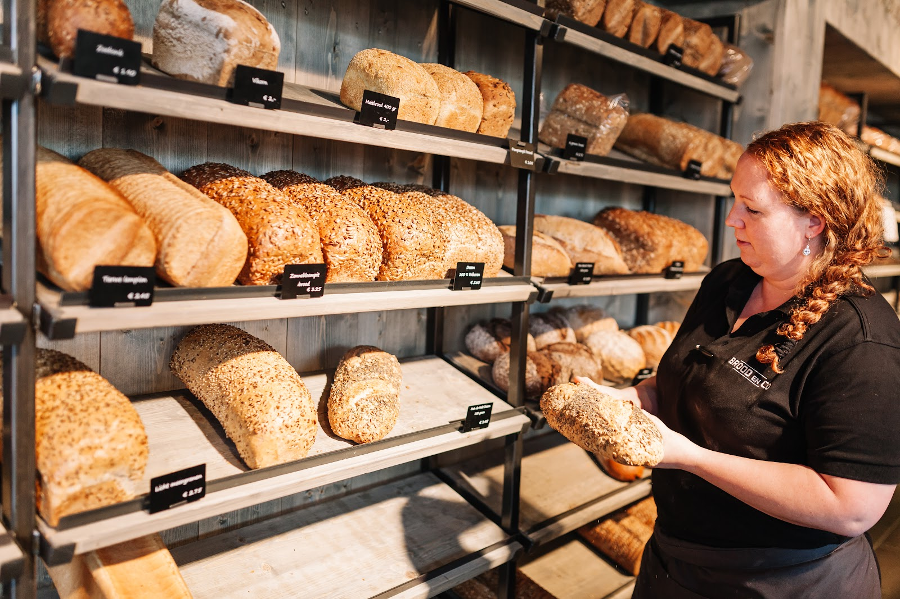
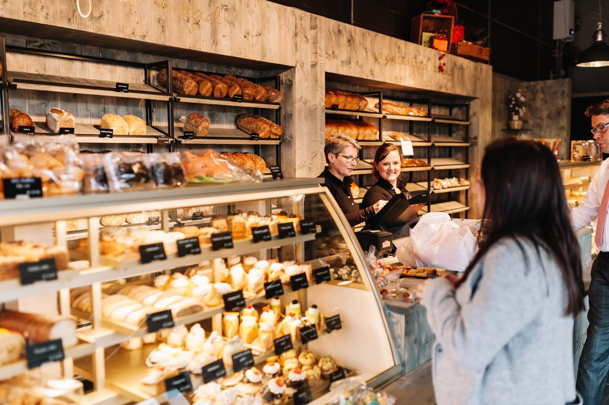
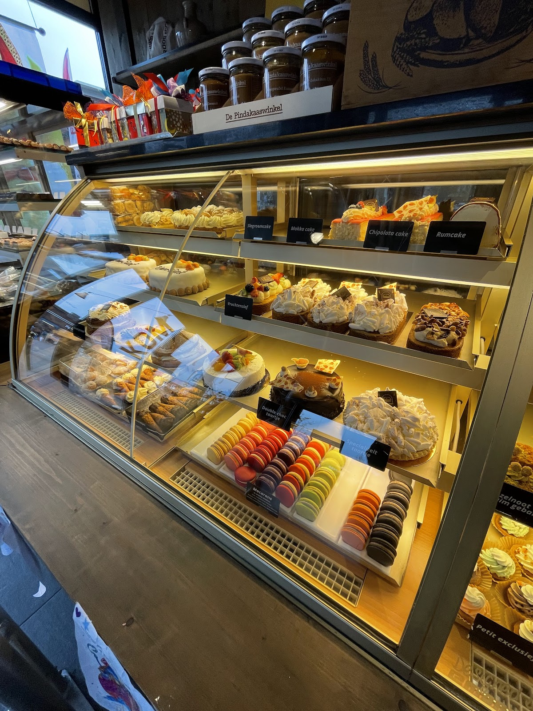
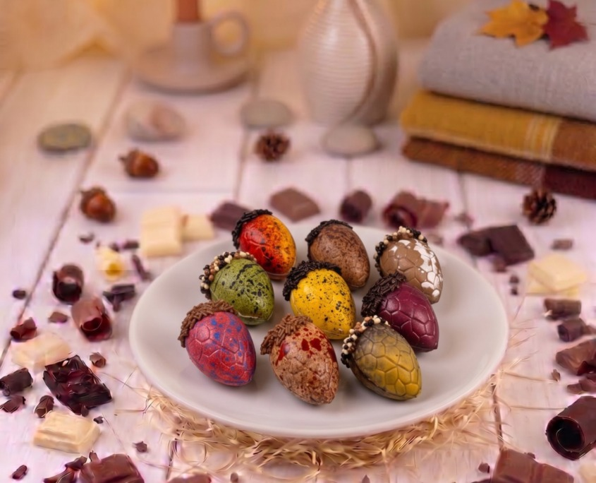
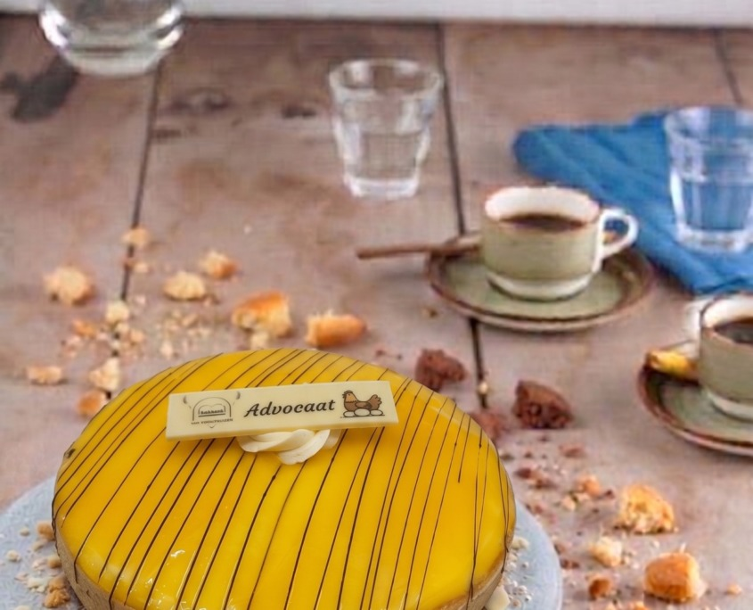
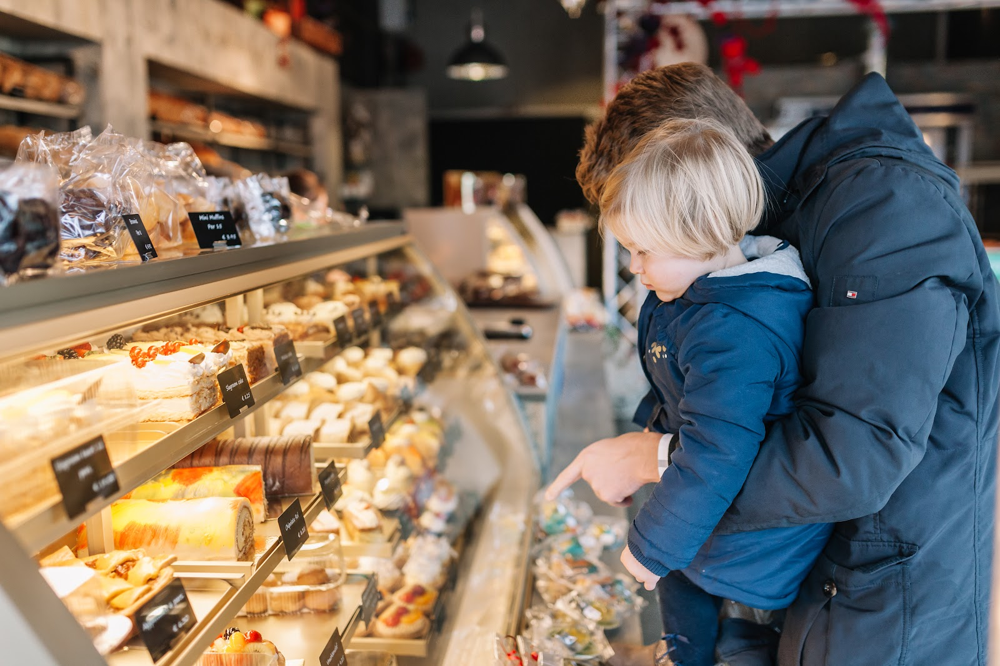

Vers brood, gewoon op de Parkweide.
Brood uit onze bakkerij in Ederveen, banket uit Lunteren. Elke ochtend vanaf zeven uur ligt het hier klaar.
Ma t/m vr open van 07:00 tot 17:30, zaterdag tot 17:00.

- Adres
- Parkweide 24, 6718 DJ Ede
- Bellen of bestellen
- 0318 519 360
- Zondag
- Gesloten
Wat er in de winkel ligt
Onze bakkers maken alle producten zelf, en dat proef je. Van het dagelijkse brood tot een taart voor zondag.

Brood
Elke dag vers uit onze eigen bakkerij in Ederveen. Meerdere soorten, van een gewoon wit tot stevig brood met zaden.

Taarten en banket
Gemaakt in onze banketbakkerij in Lunteren. Voor een verjaardag of een feestje geef je een bestelling gewoon telefonisch door.

Chocolade
Bonbons en seizoensfiguren, door onze eigen bakkers gemaakt.

Iets bij de koffie
Zoals onze advocaattaart. Of gewoon een paar gebakjes voor op het werk.

Nu in het seizoen
Speculaas en ander sinterklaasgebak liggen weer in de winkel.
Liever thuis laten bezorgen? Bestel in onze webshop.

Al ruim honderd jaar een familiebakkerij
Van Voorthuizen is door de jaren heen gegroeid tot tien winkels en twee eigen bakkerijen. Dat vraagt goede planning, zodat het brood op tijd vers bij jouw bakker ligt.
- EderveenHier bakken we het brood.
- LunterenHier maken we het banket.
- ParkweideHier haal jij het op.
"Klanten moeten erop kunnen vertrouwen dat wát ze bestellen altijd vers is."
Wat klanten zeggen
"Twee jonge meisjes hielpen mij op 30 april alsof ik hun eigen oma was, zo attent en hartelijk! De rozijnenbollen smaakten als van vroeger. Wat een fijne bakkerij."
"De laatste tijd is het brood veel beter geworden. Hebben jullie een nieuwe receptuur? (...) Jullie hebben meerdere soorten brood in het assortiment. Ook goede service. Zowel in Bellestein als de parkweide."
Kom langs op de Parkweide
Heb je vragen of wil je een bestelling doorgeven? Bel of mail ons gerust.
Parkweide 246718 DJ Ede
Openingstijden
| Maandag | 07:00 tot 17:30 |
|---|---|
| Dinsdag | 07:00 tot 17:30 |
| Woensdag | 07:00 tot 17:30 |
| Donderdag | 07:00 tot 17:30 |
| Vrijdag | 07:00 tot 17:30 |
| Zaterdag | 07:00 tot 17:00 |
| Zondag | Gesloten |